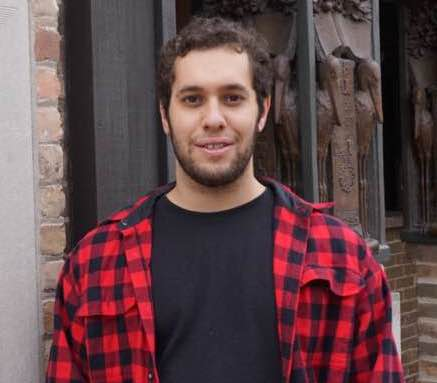

32 Vassar Street, Cambridge, MA 02139 • Office G578 • cpmusco [at] mit [dot] edu • CV • Google Scholar

I am a PhD student at MIT in CSAIL’s Theory of Computation group. I am partially supported by an NSF Graduate Research Fellowship and am fortunate to be advised by Jonathan Kelner.
My current research focuses on algorithms for graphs and matrices. I am especially interested in randomized dimensionality reduction and numerical linear algebra, and I enjoy problems related to data analysis and machine learning.
I also collaborate with MIT’s Center for Resilient Software on quantitative approaches to computer security and approximate computation.
Are you an MIT affiliate running into algorithmic problems in your research? Check out our new ``Algorithms Office Hours''. You can submit a description of your project and we'll set you up in meeting with algorithms researchers in CSAIL who may be able to offer some guidance!
Provably Useful Kernel Matrix Approximation in Linear Time Cameron Musco, Christopher Musco. In submission. MATLAB Code.
Input Sparsity Time Low-Rank Approximation via Ridge Leverage Score Sampling Michael B. Cohen, Cameron Musco, Christopher Musco. Symposium on Discrete Algorithms (SODA 2017). Slides: 60 Minutes.
Determining Tournament Payout Structures for Daily Fantasy Sports Christopher Musco, Maxim Sviridenko, Justin Thaler. Algorithm Engineering and Experiments (ALENEX 2017).
Principal Component Projection Without Principal Component Analysis Roy Frostig, Cameron Musco, Christopher Musco, Aaron Sidford. International Conference on Machine Learning (ICML 2016). Slides: 15 Minutes. MATLAB Code: fpcr.m (standard algorithm), kpcr.m (faster Krylov subspace algorithm)
Randomized Block Krylov Methods for Stronger and Faster Approximate Singular Value Decomposition Cameron Musco, Christopher Musco. Conference on Neural Information Processing Systems (NIPS 2015). Invited for full oral presentation (1 of 15 out of 403 accepted papers). Slides: 20 Minutes. MATLAB Code: bksvd.m
Dimensionality Reduction for k-Means Clustering and Low-Rank Approximation Michael B. Cohen, Samuel Elder, Cameron Musco, Christopher Musco, Madalina Persu. ACM Symposium on Theory of Computing (STOC 2015). Slides: 20 Minutes, 60 Minutes.
Principled Sampling for Anomaly Detection Brendan Juba, Fan Long, Christopher Musco, Stelios Sidiroglou-Douskos, Martin Rinard. Network and Distributed System Security Symposium (NDSS 2015). Slides: 20 Minutes.
Uniform Sampling for Matrix Approximation Michael B. Cohen, Yin Tat Lee, Cameron Musco, Christopher Musco, Richard Peng, Aaron Sidford. Innovations in Theoretical Computer Science (ITCS 2015).
Single Pass Spectral Sparsification in Dynamic Streams Michael Kapralov, Yin Tat Lee, Cameron Musco, Christopher Musco, Aaron Sidford. IEEE Symposium on Foundations of Computer Science (FOCS 2014). Invited to SICOMP Special Issue for FOCS. Slides: 20 Minutes, 60 Minutes.